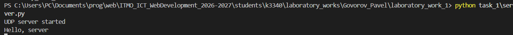
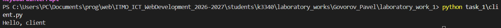
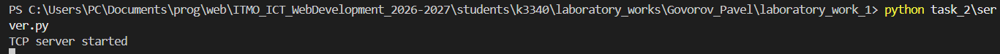
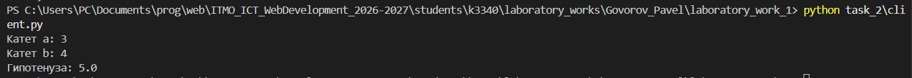
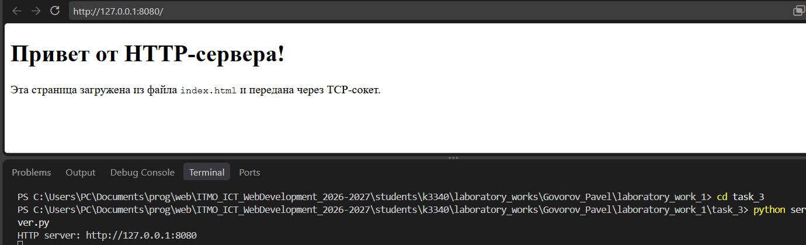
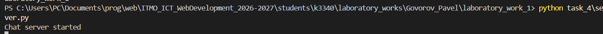
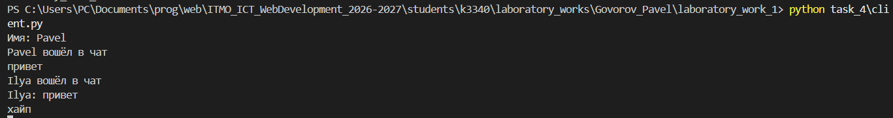
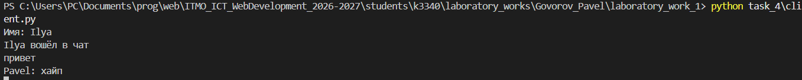
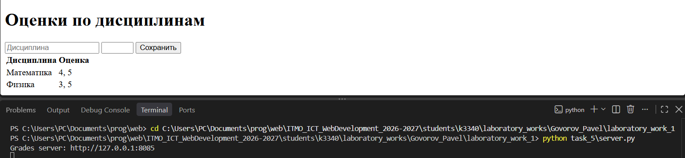

Лабораторная работа №1. Работа с сокетами
Студент: Govorov Pavel
Группа: K3340
Вариант: 1
Цель работы
Освоить создание клиентских и серверных приложений с использованием socket, протоколов UDP и TCP, HTTP-запросов и многопоточности.
Исходный код находится в students/k3340/laboratory_works/Govorov_Pavel/laboratory_work_1/.
Задание 1. UDP-обмен
Клиент отправляет серверу сообщение Hello, server, сервер выводит его и отвечает Hello, client. Используется UDP-сокет AF_INET и SOCK_DGRAM.
# client.py
client.sendto(b"Hello, server", ("127.0.0.1", 5001))
data, _ = client.recvfrom(1024)
# server.py
message, address = server.recvfrom(1024)
print(message.decode())
server.sendto(b"Hello, client", address)
Проверка:
python task_1/server.py
python task_1/client.py
Hello, server
Hello, client


Задание 2. TCP-вычисления
Для варианта 1 сервер вычисляет гипотенузу по теореме Пифагора:
c = √(a² + b²).
a, b = map(float, connection.recv(1024).decode().split())
connection.sendall(str((a * a + b * b) ** 0.5).encode())
Клиент передаёт два катета одной строкой по TCP и выводит полученный результат.
python task_2/server.py
python task_2/client.py
Введите первый катет: 3
Введите второй катет: 4
Гипотенуза: 5.0


Задание 3. HTTP-сервер
Сервер принимает TCP-соединение на порту 8080, читает index.html и вручную формирует HTTP-ответ с заголовками Content-Type и Content-Length.
response = (
b"HTTP/1.1 200 OK\r\n"
b"Content-Type: text/html; charset=utf-8\r\n"
+ f"Content-Length: {len(html)}\r\n\r\n".encode()
+ html
)
connection.sendall(response)
Проверка выполняется в браузере по адресу http://127.0.0.1:8080/.

Задание 4. Многопользовательский чат
Чат использует TCP и создаёт отдельный поток threading.Thread для каждого клиента. При подключении клиент передаёт имя. Сообщения отправляются остальным участникам. Команда /quit завершает подключение.
connection, _ = server.accept()
threading.Thread(target=handle_client, args=(connection,)).start()
В клиенте отдельный поток принимает сообщения, поэтому ввод и получение работают одновременно.
python task_4/server.py
python task_4/client.py
Клиент запускается в двух или более терминалах.



Задание 5. Веб-сервер оценок
Сервер на порту 8085 обрабатывает GET и POST-запросы. POST принимает название дисциплины и оценку, а GET отображает форму и таблицу. Оценки группируются по предмету.
data = parse_qs(request.split("\r\n\r\n", 1)[1])
subject = data["subject"][0]
grades.setdefault(subject, []).append(data["grade"][0])
Проверка выполняется в браузере:
python task_5/server.py
http://127.0.0.1:8085/

Для запуска всех команд нужно перейти в папку работы:
cd students/k3340/laboratory_works/Govorov_Pavel/laboratory_work_1